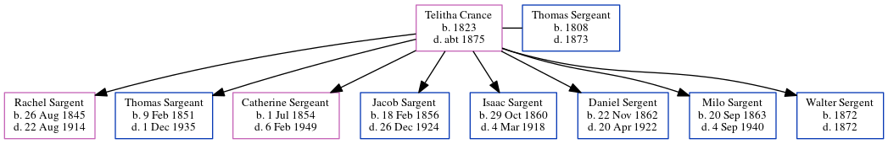

Telitha Sergeant (née Crance) 1823 - c1875
[ Home ] | [ Calendar ] | [ Surnames Index ] | [ Census Index ] | [ Family History ]Telitha Crance, the wife of Thomas Sergeant (the first cousin five-times-removed on the mother's side of Nigel Horne), was born in Ohio, USA in 18231 and married Thomas (with whom she had 8 children: Rachel, Thomas, Catherine, Jacob, Isaac Homer, Daniel, Milo S and Walter) in Allen, Indiana, USA on Nov 13, 1841.
She died c. 1875 in Hanna, LaPorte, Indiana1 and was buried in La Porte, Indiana, USA after Jan 1, 18751.
Children
- Rachel was born on Aug 26, 1845
- Thomas was born on Feb 9, 1851
- Catherine was born on Jul 1, 1854
- Jacob was born on Feb 18, 1856
- Isaac Homer was born on Oct 29, 1860
- Daniel was born on Nov 22, 1862
- Milo S was born on Sep 20, 1863
- Walter was born in 1872
Citations
- U.S., Find A Grave Index, 1600s-Current Ancestry.com Operations, Inc.
Media
Headstone

Family Tree
Generated by ged2site. Last updated on Jun 11, 2024